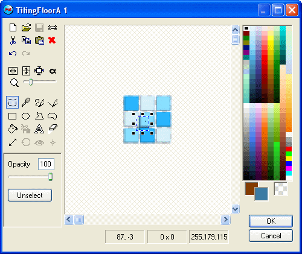

Exporters
Exporters Extensions
Extensions Interface
Interface Chowdren
Chowdren ClickStore
ClickStore Bug Tracker
Bug Tracker| |
This is an archive. |
| See the new ClickWiki at https://clickwiki.net. This version is just an archive for the purposes of migrating content to the new structure. |
Picture Editor
For the similar editor for editing Active Objects, see the Animation Editor.
Summary: The Picture editor is an important part of Clickteam Fusion 2.5: it allows you to create and edit all the images and icons contained in your application. It is a complete paint package supporting advanced features.
The Picture editor is a complete paint package embedded in Clickteam Fusion 2.5. It contains all the necessary tools to draw, import and edit images.

{kind=link}
Contents
Edit Area
The edit area, in the center of the dialog box, contains the image to edit. To draw, you have to select a tool from the Drawing tools on the left, select the drawing color(s) in the color palette on the right, and then use your mouse to draw in the image.
If the image is larger than the edit area, you can use the scroll bars to view the hidden areas. You can also press the SPACE key and move the image with the left mouse button without releasing the SPACE key.
To zoom the image, either use the Zoom slider in the Drawing tools, or use the mouse wheel.
Drawing Tools
{kind=link}
Color Palette
The color palette depends on the object you are editing. If you are editing an object from the current frame, it will contain the 256-color palette of the frame. If you are editing the icon of an object, it will contain a standard Windows halftone palette. If you are editing an alpha channel, it will contain shades of gray. Click one of the colors in the color palette to select the color to use. Use the left button to select the foreground color, and the right button to select the background color.
The boxes below the color palette contain the background color, the foreground color, and the transparent color. To draw with the transparent color, click the Transparent color box, with the left or right button. To customize the background or foreground color, double-click on it and select a color in the color selector.
Transparent Color
Each image in Clickteam Fusion 2.5 has a transparent color, even if it's displayed as opaque. To change the transparent color, you can either press the SHIFT key while clicking on a color in the color palette, or select the Transparency tool in the toolbar and pick a color in the image.
In this version of Clickteam Fusion 2.5, any color can be transparent (in previous versions of Clickteam Fusion 2.5, only the black color was transparent).
Indicators
The 3 indicators at the bottom of the dialog box contain:
- The coordinates of the mouse cursor
- The size of the selection
- The RGB values of the pixel under the mouse cursor
Keyboard shortcuts
A = Rotate tool
B = Selection tool
D = Brush tool
E = Ellipse tool
F = Fill tool
G = Polygon tool
H = Hot Spot tool
L = Line Tool
M = Shape tool
P = color picker tool
Q = Action Point tool
R = Rectangle tool
S = Spray tool
T = Text tool
U = Eraser tool
W = Size tool
Y = Transparency tool
Ctrl + A = Select All
Ctrl + C = Copy
Ctrl + E = Edit alpha mask
Ctrl + I = Flip horizontally
Ctrl + J = Flip vertically
Ctrl + K = Crop
Ctrl + N = Clear
Ctrl + O = Import
Ctrl + S = Export
Ctrl + T = Show / Hide transparent color or alpha mask
Ctrl + V = Paste
Ctrl + X = Cut
Ctrl + Y = Redo
Ctrl + Z = Undo
Del = Delete Selection
Ctrl + Left Arrow = previous frame
Ctrl + Right Arrow = next frame
F2 / Ctrl+'+' = Zoom In
F3 / Ctrl+'-' = Zoom Out
F4 = Zoom x1
The Import dialog
When you click on the Import button, it opens a file selector, allowing you to select the image file to import. According to the type of image or animation you import, you will be able to select either simple image files, or animation files as well.
Note: numbered image files are considered as an animation. For example, if you select the file IMAGE001.BMP and the files IMAGE002.BMP and IMAGE003.BMP exist in the same directory, Clickteam Fusion 2.5 will load the 3 images and display them in the Import Image dialog box.
When you have selected the image file to import, the following dialog box opens:
{kind=link}
The top of the dialog box shows the picture to import. Use the scrollbars to display the hidden areas.
- Transparent Color: The color stated there will be taken as the transparent color (areas below the object will be visible). Use the Pick button to choose another color directly from the image, or double-click the colored square to choose a color in a color selector. If you do not want to use a transparent color, simply choose a color that is not present in the image.
- Box mode: This option is very powerful: it allows you to capture several images contained in boxes in a single image file. In order for this option to work, you must respect some rules when saving the image file. First, every graphic you want to import must be surrounded by a rectangle of a color different from the background color of the image. The same color must be used to define all the rectangles surrounding the graphics contained in the image. Secondly (optional), you can define the hot-spot and action points of each image with a pixel of a different color in the horizontal and vertical lines of the rectangles. To define the hot-spot, indicate its position by a pixel of a different color in the top line (X coordinate) and left line (Y coordinate). To define the action point, put a different pixel in the bottom line (X coordinate) and right line (Y coordinate). The capture process works from left to right and top to bottom (like reading). If you capture an animation, the top-left frame will be the first captured.
- Import as Animation: If this option is not selected, the first imported image will replace the image currently edited in the picture editor. If this option is selected, another group of options becomes activated:
- From Frame: Indicates the index of the first image that will be imported.
- To Frame: Indicates the index of the last image that will be imported.
- Replace current animation: The list of frames being edited will be cleared before importing the new images.
- Insert before current frame: The imported images will be inserted before the frame being edited.
- Insert after current frame: The imported images will be inserted after the frame being edited.
- Import selection: Imports the selected part of the image. To select a part of the image, click the Select button and draw a box around the area to import.
- Import as selection: If this box is checked, the imported image will not replace the current picture, but will be imported as a selection in the picture editor.